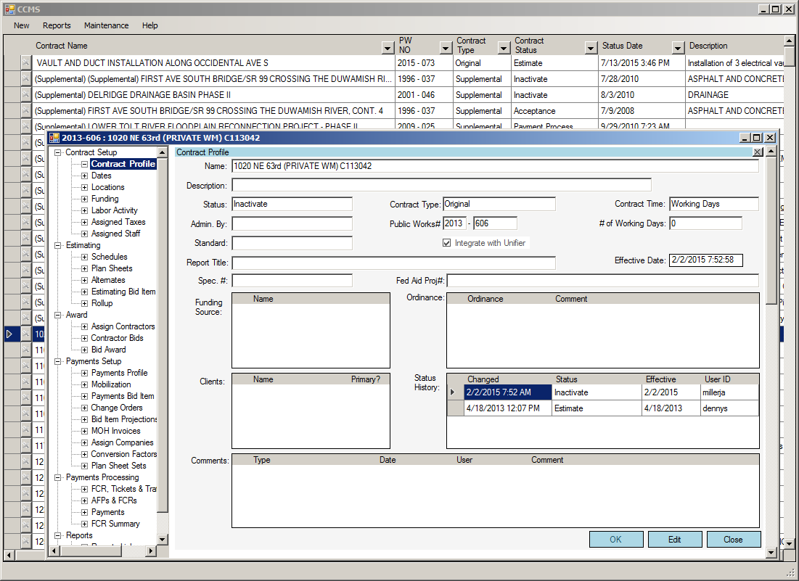

Project Portfolio
Early Days
-
MS-DOS 6 Setup.

-
MS-DOS Editor (EDIT.COM) licensed to Microsoft for Windows 95 to Windows XP.

Wikipedia article on EDIT.COM
Recent Projects
-
Construction Contract Management System

-
And many other projects that i'm too lazy to add just now, such as ROM, WARP, WDR, OODE, and many other mysterious acronymns.
Personal Projects
-
Windmill DOS - A useless 8086/DOS emulator.